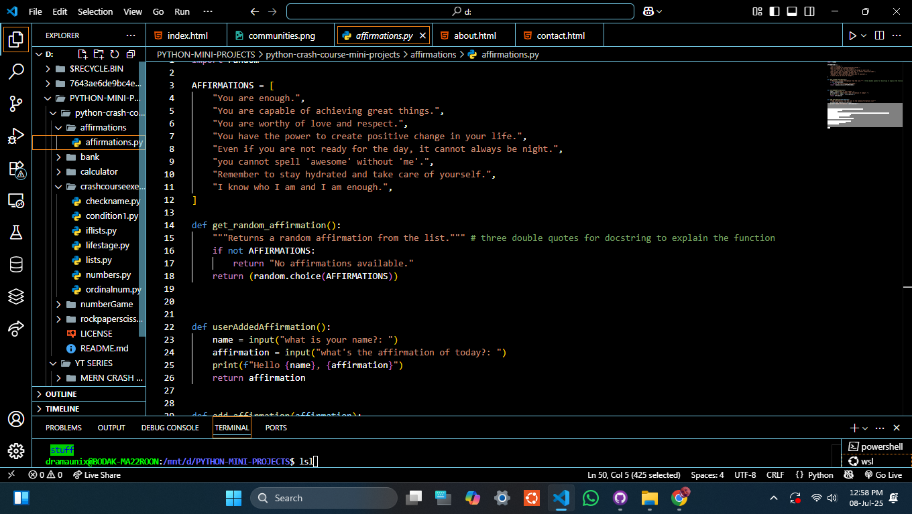

Python Mini Projects
1. Daily Affirmations CLI
A command-line app that displays a new positive affirmation each time it runs. Great for practicing Python syntax, lists, and string formatting.
View on GitHub2. Guess the Number
Random number game where the user has to guess the number the computer generates. Great for practicing loops and conditionals.
View on GitHub